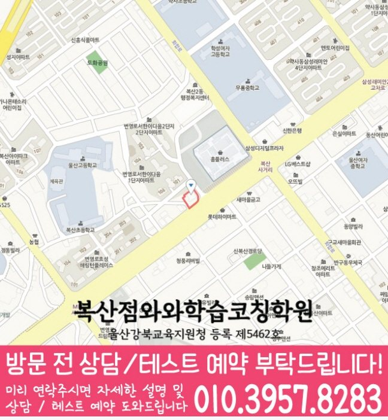

복산동 중학생학원
복산동에서 안내하는 지점은 와와학습코칭센터 복산점입니다.
자료상 안내 과목: 국어 · 영어 · 수학 · 과학 · 사회

수업 안내 이미지

지점·과목 안내
복산동 수업을 알아볼 때 확인할 지점
복산동에서 수업을 알아보는 학생에게 안내하는 지점은 와와학습코칭센터 복산점입니다. 지점 위치와 과목별 학년을 먼저 확인해 주세요.
과목별 안내 학년
- 중등 국어
- 중1~중3
- 중등 영어
- 중1~중3
- 중등 수학
- 중1~중3
- 중등 과학
- 중1~중3
제공 자료에 기재된 학년입니다. 현재 개설 과정·수업 시간·반 편성은 상담에서 확인해 주세요. 안내가 없는 학년은 수업 가능 여부가 확인되지 않았습니다.
실제 지점 위치
와와학습코칭센터 복산점
울산 중구 번영로 461 B2동 7
주소로 네이버 지도 검색등록 정보·교습비·주변 학교
교육지원청 등록번호: 울산강북교육지원청 등록 제5462호
주변 학교 참고: 울산중학교. 재학생 수강 여부나 학교별 반 편성을 뜻하지 않습니다.
센터 위치 안내

자세한 학습 안내 목차
학습 상담 준비
중등 학습 상담에서 확인할 내용
복산점의 중등 과정은 과목마다 안내 학년이 다릅니다. 학생의 학년과 필요한 과목을 함께 전달해 주세요.
함께 의논할 주제 복습 간격 정하기·과목별 시간 균형
학교 진도와 평가 일정
교과서·부교재와 최근 시험지, 수행평가 일정을 준비해 주세요. 과목마다 어려운 단원과 감점 이유를 나누면 복습 순서를 정하는 데 도움이 됩니다.
공부량과 완료 기준
학원 과제와 학교 과제가 겹치는 날을 표시하고, 실제로 끝낼 수 있는 양을 적어 보세요. 오답을 다시 풀 시점과 진도를 조정할 기준을 상담에서 확인해 주세요.
학교와 일정
복산동 학교생활과 함께 맞춰 볼 일정
- 중등
- 울산중학교
지역 참고 학교이며, 재원 여부나 학교별 반 운영을 뜻하지 않습니다. 재학 중인 학교의 교재·시험 범위·하교 시간을 기준으로 상담해 주세요.
자주 묻는 질문
수강 전 확인할 질문
복산점의 중등 과목별 수업 안내 학년은 어떻게 되나요?
자료에 기재된 학년은 국어 중1~중3, 영어 중1~중3, 수학 중1~중3, 과학 중1~중3, 사회 중1~중3입니다. 현재 개설 과정과 수업 시간은 지점 상담에서 확인해 주세요.
교습비와 현재 수업 시간은 어떻게 확인하나요?
센터별 교습비 자료에서 안내 금액을 확인할 수 있습니다. 희망 과목·학년을 알려 주고 현재 과정의 교습비, 교재비 등 추가 비용, 수업 요일과 시간을 확인해 주세요.
상담에서 학습관리 방식은 무엇을 물어보면 좋나요?
학생이 푼 문제와 실제 공부량을 어떻게 확인하는지, 오답을 언제 다시 보는지, 계획한 양을 끝내기 어려울 때 어떻게 조정하는지 물어보세요. 점검 주기와 학부모 안내 방식도 함께 확인해 주세요.
상담 후 정리할 내용
안내받은 수강 과목·학년, 수업 요일·시간, 교습비와 추가 비용을 함께 적어 두세요. 학생이 시작할 학습 범위와 과제량, 다음에 학습 상태를 확인할 시점도 정리하면 계획을 이어 가기 좋습니다.